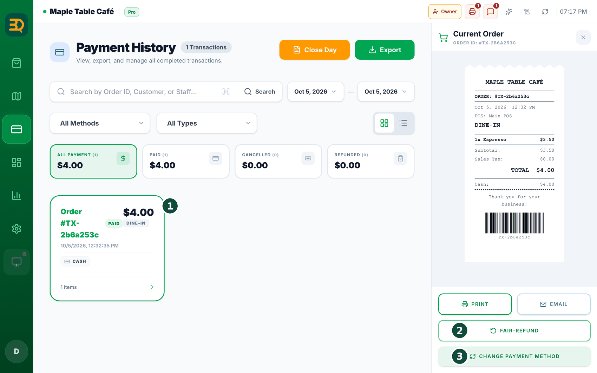
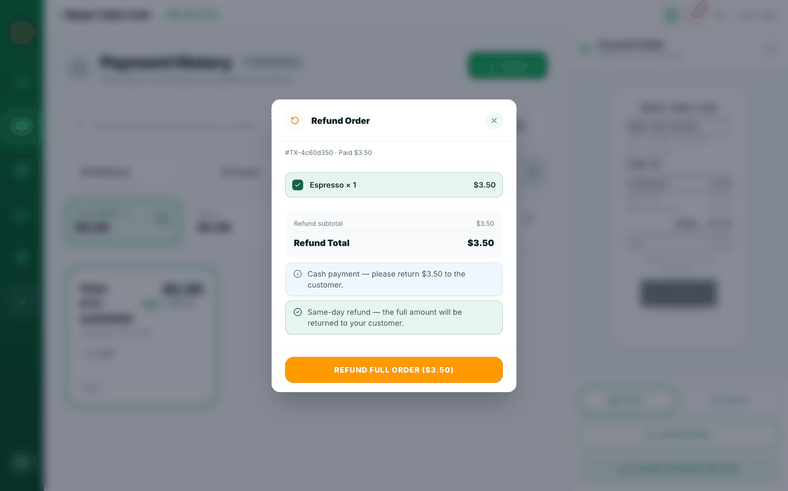
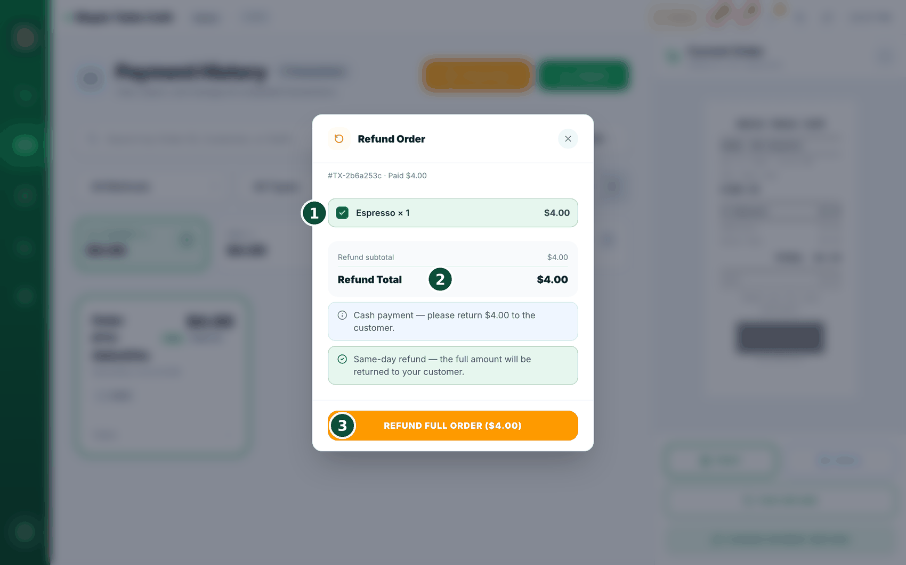
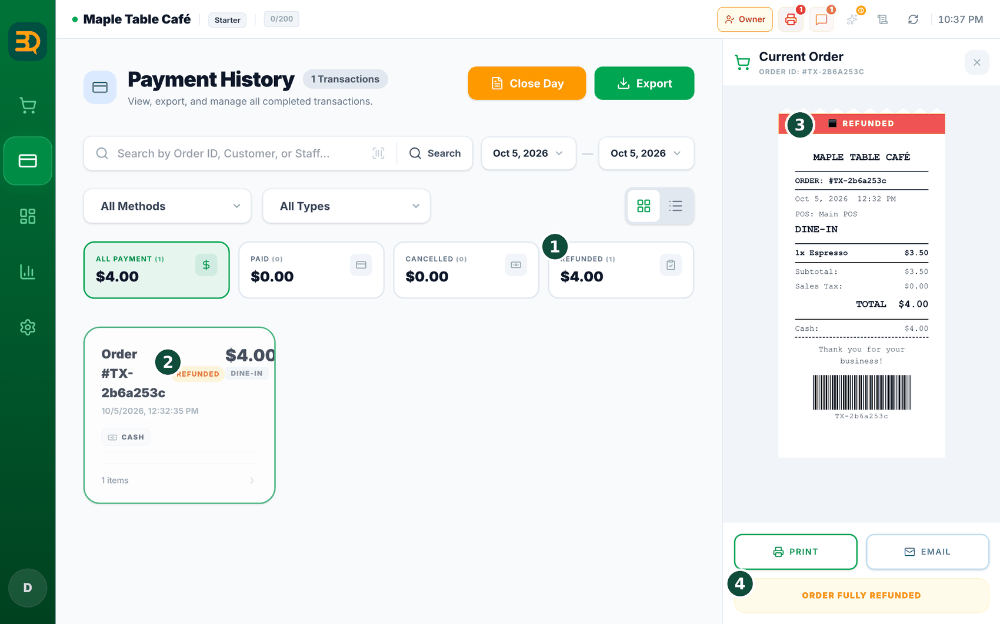

10Reembolsos
Un reembolso es cuando le devuelve el dinero a un cliente. BrewDesk lo hace seguro: primero un gerente tiene que aprobarlo, así que no se puede usar indebidamente.


- Vaya a Manage (Gestionar) › Payment History (Historial de pagos) en la barra lateral izquierda.
- Toque el pedido que quiere reembolsar para abrirlo.
- Toque el botón FAIR-REFUND debajo del recibo, a la derecha (aparece en mayúsculas).

- Elija reembolso total para devolver todo el dinero (funciona el mismo día). O elija reembolso parcial para devolver solo algunos productos o parte del dinero.
- Un gerente escribe su PIN (un código secreto) para aprobarlo.

- El reembolso está hecho. BrewDesk lo registra y corrige por usted los totales del día.
¿Qué es un PIN? Es un código secreto corto, como el de una tarjeta bancaria. Evita que se haga un reembolso por error.
Un reembolso parcial ahora imprime un recibo parcial. El comprobante de reembolso muestra solo los productos cuyo dinero devolvió, y los totales de abajo (subtotal, descuento, cargo por servicio, impuesto) ahora también son la parte reembolsada, no las cifras del pedido original. Así el cliente puede sumar el comprobante y le da exactamente lo que volvió a su tarjeta.
Temas relacionados
¿Necesita más ayuda?
Puede enviar un ticket de soporte desde la app en Settings › Support.